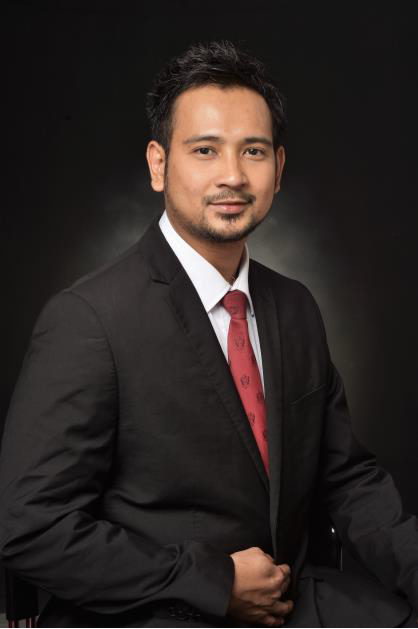

|  | Jerico AbasoloTest Maintenance Engineer at ams Asia Inc. I have more than 13 years’ experience in Semiconductor Industry, mainly focused on Final Test. Handling several Pick & Place, Gravity Fed, Turret Test Handlers and ATE Testers. |
| Date | School | Course |
|---|---|---|
| 2017 - 2018 | Lyceum of the Philippines Manila | Bachelor of Science in Computer Engineering |
| 2006 - 2007 | Technological University of the Philippines Cavite | Bachelor of Technology Major in Electronics |
| 1999 - 2002 | Technological University of the Philippines Manila | Electronics Communication Engineering Technology |